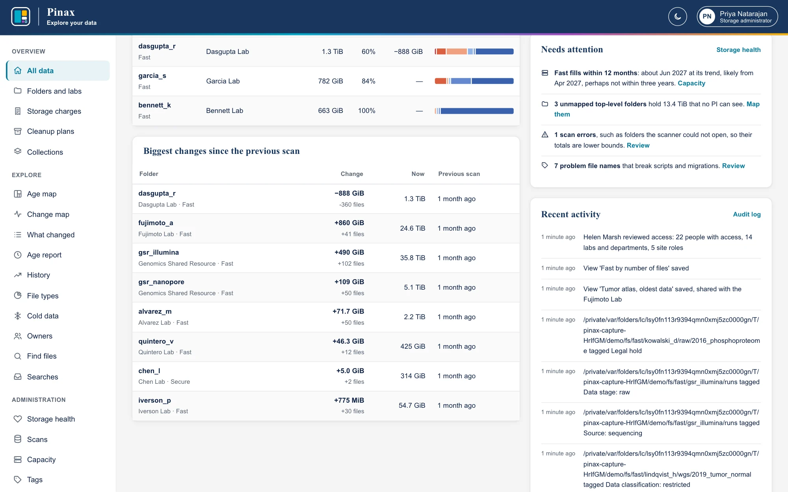
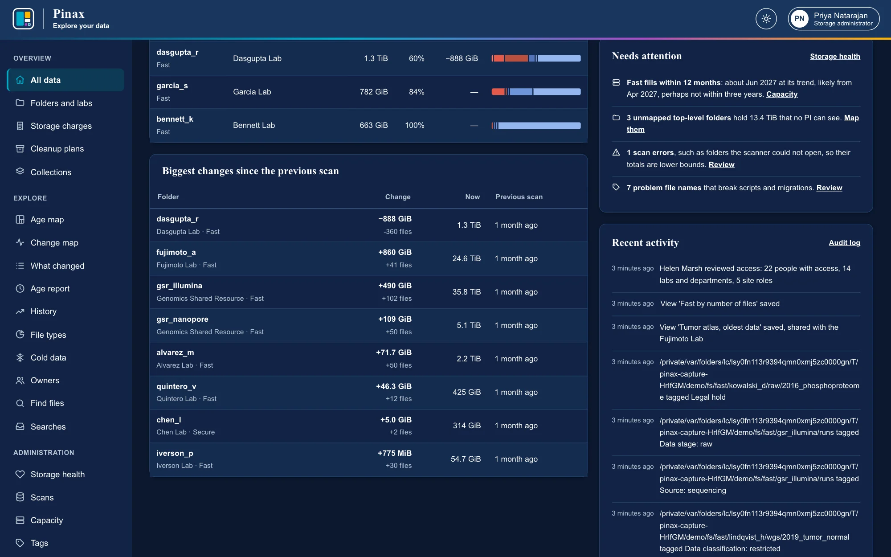
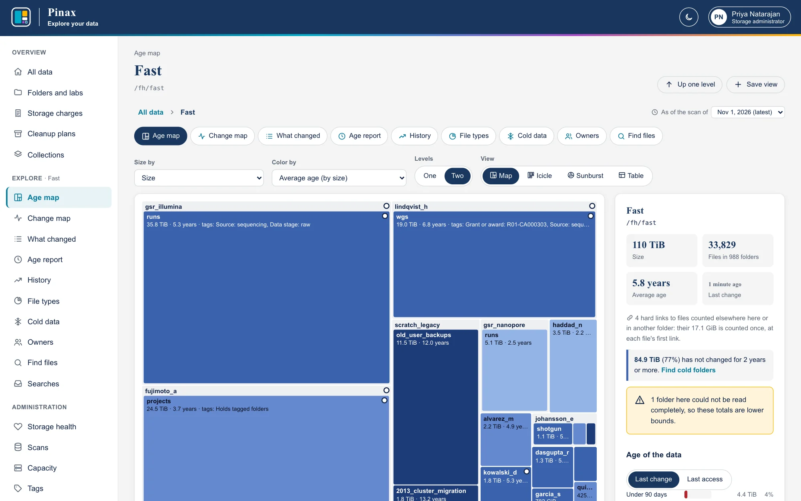
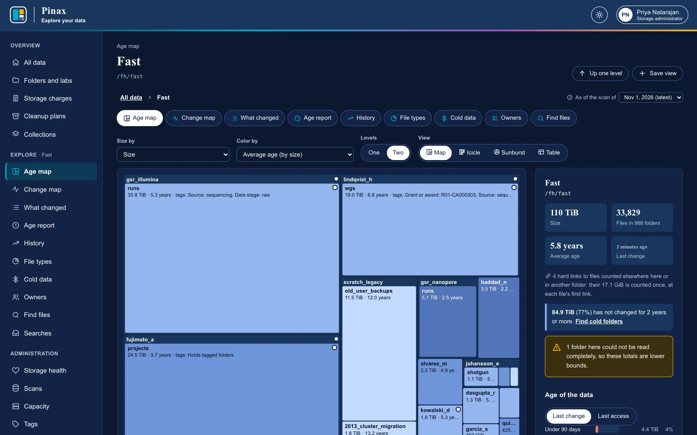
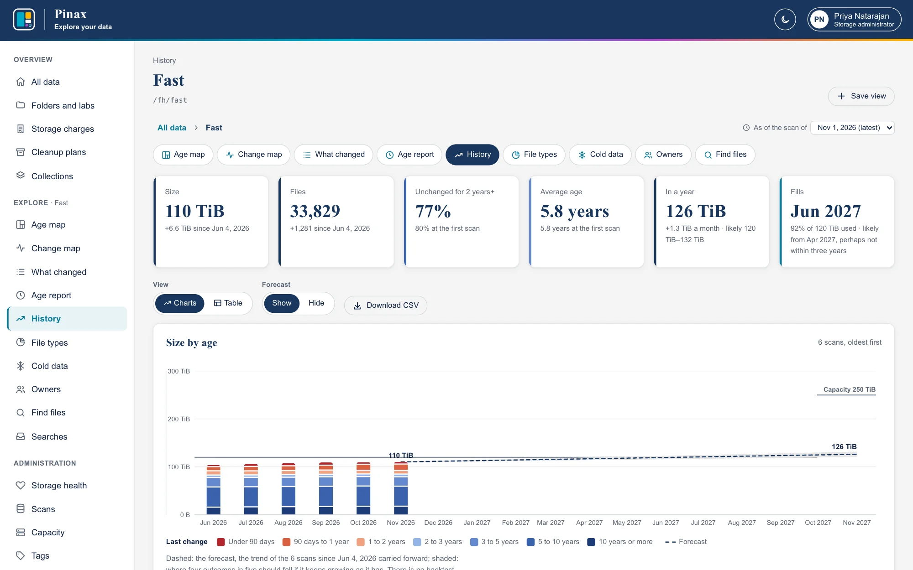
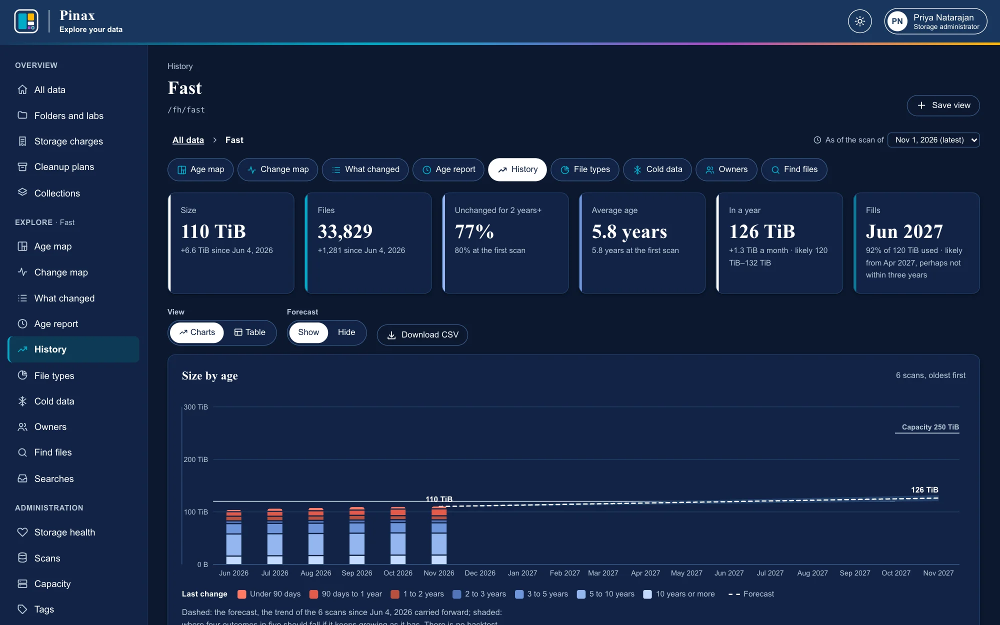

Administering Pinax
For storage administrators, and the auditors and finance who read the same pages: what each page is for, and a first week with them.
For storage administrators: the pages only they change, and what to do with them; and for auditors and finance, who read some of the same pages (Site roles). Installing Pinax, scanning, the catalog, upgrades, logs, and monitoring are in DEPLOYMENT.md; every setting is in CONFIGURATION.md; every command is in CLI.md.
A storage administrator sees every filesystem and every folder, including folders no lab owns, and the pages under Administration in the sidebar. The first one is made from the command line (pinax user add --admin); after that, administrators make others under People and access. At least one active administrator always remains, and nobody can remove their own role or deactivate themselves. An auditor sees the same pages without their buttons; finance sees Storage charges of any lab, Chargeback, Costs, and Capacity.
A new administrator's first week usually goes:
- Check that every filesystem's latest scan is in (Scans), and that automatic ingest is running.
- Map every top-level folder to its lab or department (Folders and labs, Unmapped only).
- Add the people, or import them (IMPORT.md), and check what each sees (People and access).
- Set each filesystem's capacity (Capacity), and its prices and free tiers if storage is charged (Costs).
- Look at Storage health for folders the scanner could not read, and give it access.
- Read All data each week: what grew, what needs attention.
- Give auditors, finance, and division heads their site roles, and record an Access review from time to time.
All data
An administrator's home page: every filesystem as of its latest scan. Along the top, the total size and space on disk, files and folders, how much is unchanged for two years or more, the change since the previous scans, and the unmapped folders (folders no lab owns, so nobody is charged for them). Each filesystem's card has its size, average age, data by age, when it was scanned and how long the scan and its index took, any scan errors, and how full it is, with when it fills at its trend.


Below: the largest folders, with owner, size, cold share, change, and age profile; the age of all data; what kind of data it is; Needs attention (a filesystem that is full or fills within PINAX_FILL_WARNING_MONTHS, the unmapped folders and what they hold, scan errors, and problem file names, each with a link to it); and Recent activity, the latest changes from the audit log. Failed or skipped scans, and automatic ingest stopping, show on Scans.


Every report works for a whole filesystem too: the age map of Fast shows each top-level folder, unmapped ones among them, and History of a filesystem draws its capacity above the columns.



